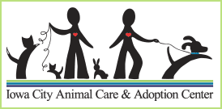
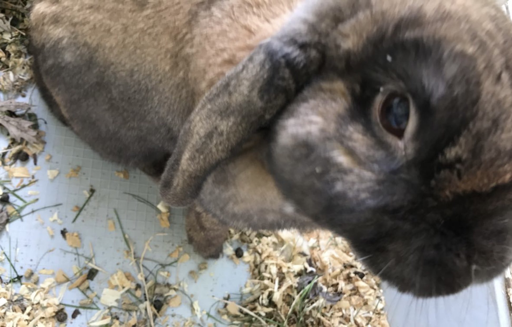

About Me

Hello, my name is Landon Tiet, I am a fourth year computer science engineer at the University of Iowa. Initially I had applied to the University as a psychology major however over the summer decided to change my major over to undecided engineering and eventually to computer science engineering. After college I hope to use my experience to work as a software engineer.
Hobbies/Interests

In my free time I enjoy playing soccer and basketball with my friends, playing games, and taking pictures. Although I don't have any professional equipment, I still enjoy taking photos to capture fun or nice looking moments.
Fun Fact
I'm a fan of animals, during my senior year of high school I used to spend time outside of school volunteering for a local animal shelter.

Although I don't have any pets now, when I was younger my family took in this holland lop because his owner could no longer care for him.